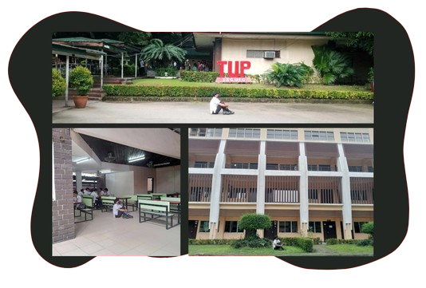

Excellence in Education
Since its establishment in 1977, TUP Taguig has been dedicated to providing quality education in engineering and technology. It began as a technical and vocational institution and has since evolved to offer advanced diploma and degree programs.
With its mission to produce industry-ready graduates, TUPT continues to stand as a pillar of technological education in the region.